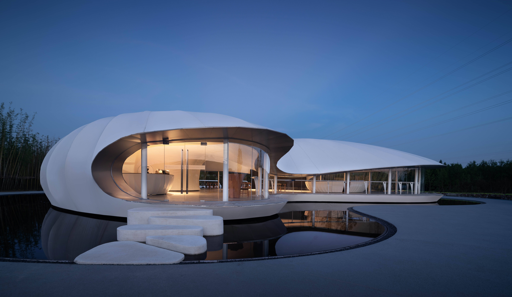
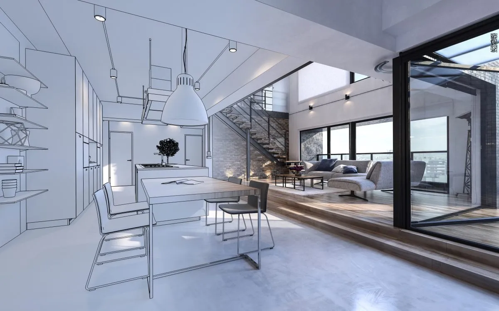
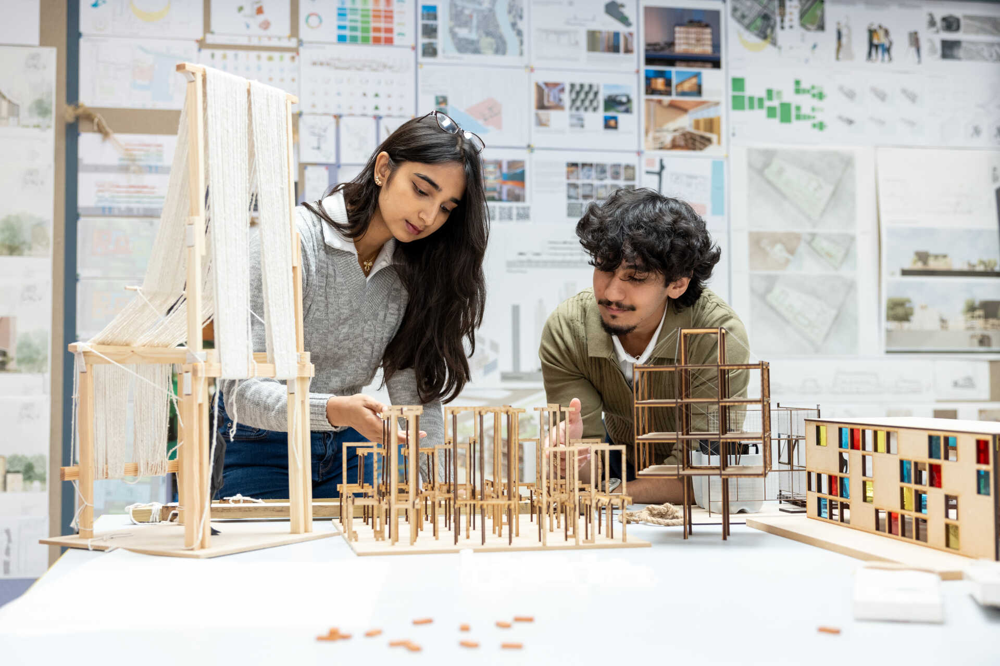

AI Website SoftwareDesigns buildings and physical spaces—balancing creativity, engineering function, and human experience.
Imhotep,an ancient Egyptian who lived around 2667–2600 BC. He is famous for designing the Step Pyramid at Saqqara for Pharaoh Djoser and is recognized as the earliest recorded architect known by name.
• Ancient Architecture
Focused on monuments and religion (temples, pyramids)
• Industrial Revolution
Steel and new materials changed building scale and height
• Modernism (20th Century)
“Less is more,” clean forms and functional design
• Contemporary Architecture (Today)
Sustainability, human experience, and technology-driven spaces

Profound influence on our social
well-being, mental and physical health, cultural identity, economic prosperity, and ability to address pressing environmental challenges.It reflects cultural identity, fosters community, influences well-being and behavior, and drives economic growth through construction and design.
Both architects and designers start with the needs of people.
They aim to improve comfort, usability, and emotional experience.
Architecture example:
Designing a house by studying how the family lives — movement paths, sunlight, privacy, and comfort.
Design example:
Creating a website by studying how people scroll, read, and click — layout, clarity, and interaction.
Core idea:
Design serves people, not just visual appearance.

Architects and designers use research, not just intuition.
Architects research:
• Sunlight and wind analysis
• Safety standards
• Material performance
• Building codes
• Space flow and behavior patterns
Designers research:
• User interviews
• Data analytics
• Visual A/B testing
• User journey and interaction patterns
Core idea:
Research → Test → Improve. Good design always evolves through evidence.

Both professions follow the same logical workflow:
Identify the Problem - Create a Solution - Measure the Result
Case 1: Architecture
Problem: Apartment felt dark and cramped
Solution: Larger windows + open floor plan + lighter materials
Result: Natural light increased by 35% and residents reported improved mood and comfort
⸻
Case 2: Design
Problem: Website had low user engagement
Solution: Clear visual hierarchy + bigger call-to-action buttons + more white space
Result: User time-on-page increased 48%, and click-through rate doubled
⸻
Although architects and designers work on different scales, their mission is the same:
To make life better through thoughtful, meaningful, human-centered design.
Architects shape spaces.
Designers shape experiences.
Together, they shape how people live.
AI Website Software